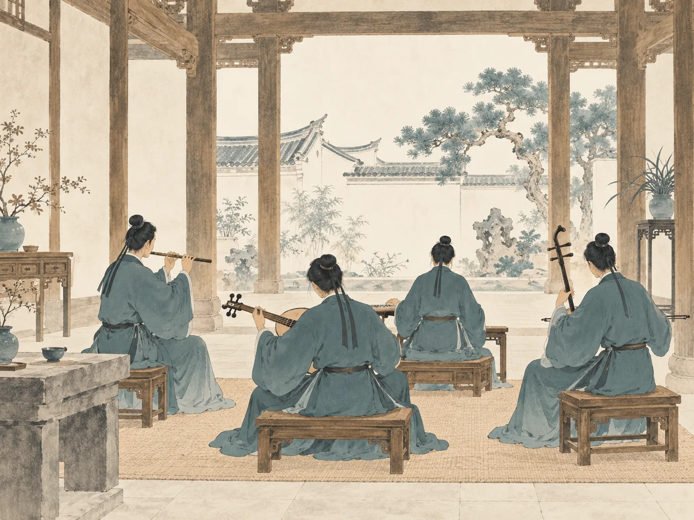

它从哪里来
海风里的乡音它是什么声音
四件乐器，彼此相和。
01 / 04
左右滑动，点击纸卡展开
一首曲子，怎么被留下？一首曲子
怎么被留下
南音靠一套用汉字写的记谱法——「工乂谱」
五个字记音：乂、工、六、思、一，用泉州话念，这里以 do re mi sol la 作入门示意。
古代很多乐谱只剩符号，成了「哑巴音乐」，再也唱不回来
南音用工乂谱，把上千年的旋律一代代存了下来
工乂谱 · 点击一个谱字
谱字排布为互动示意
轻触谱字，读一声古老的音。
谱里，还记下了什么？
这些字，南音乐人叫它“谱”。谱里还有「拍」和「撩」：它们相互配合，记下旋律的节奏
它们不只是单纯的符号，更是一种传承的载体，只要有人还认得，曲子就能在历史中传唱下去
1、2、3、5、6 为入门示意；实际音高与演奏须结合管门和传习。谱字注音应随方言传习，这里不以普通话拼音代替。
谁还在唱
老的人把它唱了一辈子，年轻的人正把它唱成新的样子

老馆阁 · 上世纪
一支曲子悠悠唱上一整夜
上世纪的南音馆阁里，老辈人围坐「拼馆」、搭锦棚，
一支曲子悠悠唱上一整夜
人物照片由小组提供，老馆阁与年轻新声为创作插画。
点击圆钮听声音示意 · 非人物演唱录音
南音，是多种声音长久相遇的结果，自中原南来后代代传承，没有断过
那么它的下一声，该交给谁了？
06如果这一声，交给你，
如果这一声，交给你，
你会怎么做？
轻触一张纸条，接住这一声。